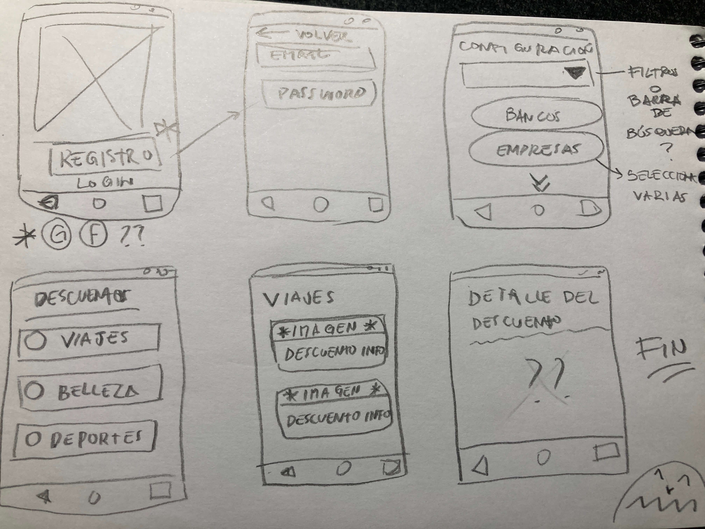
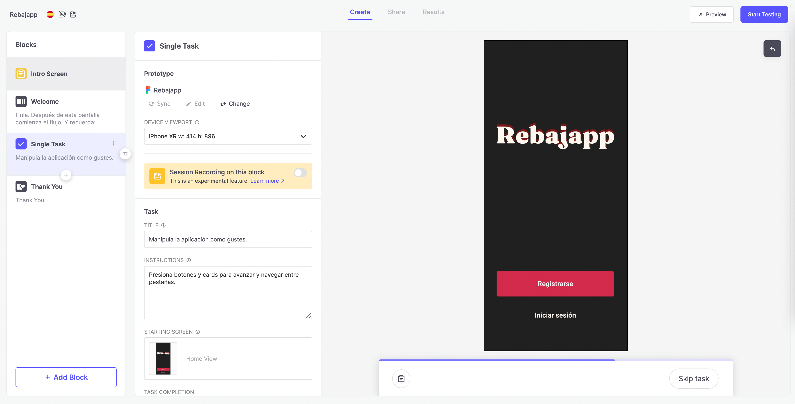
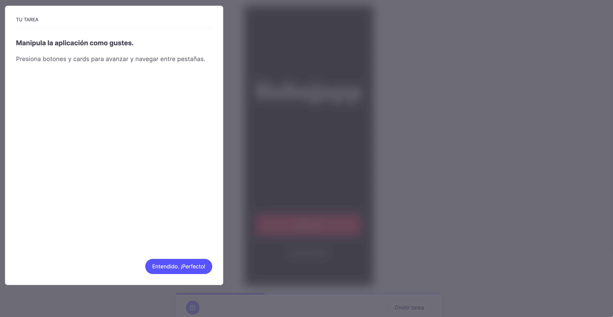
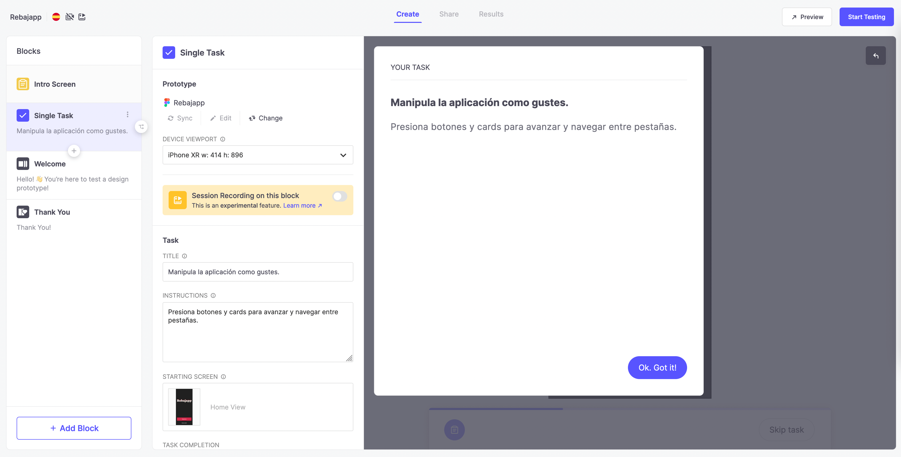
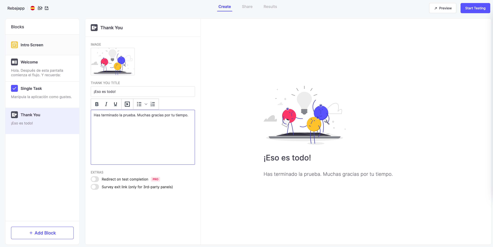
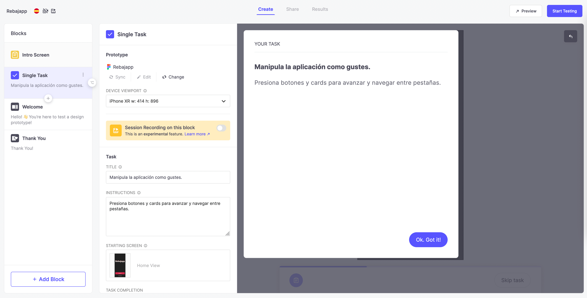
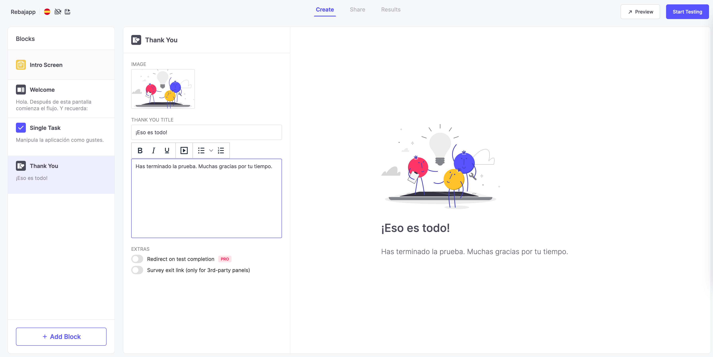
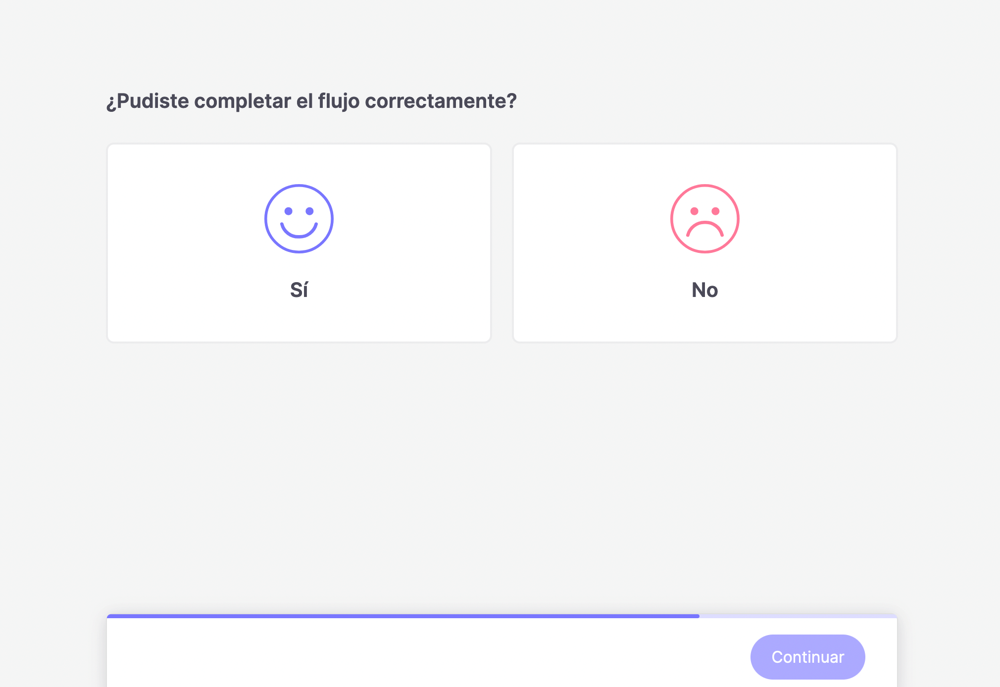
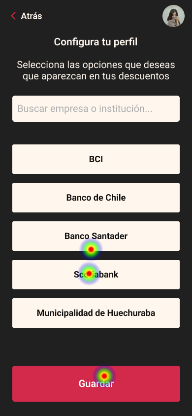
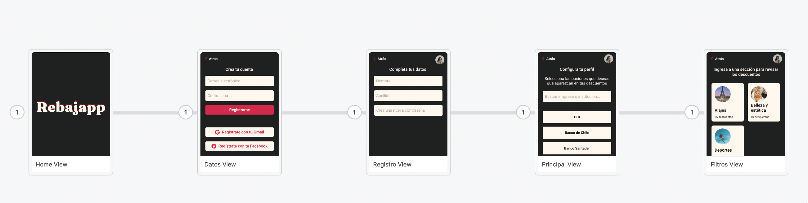

Portafolio
Mockup para mobile app (Figma)
Maqueta de aplicación móvil construida en Figma. Te informa de los descuentos
en las plataformas en las que estás suscrito como cliente.
Buscamos una solución a una necesidad: mostrar todos los
descuentos que una persona tiene en sus plataformas (bancos, empresas, etc.)
Luego, nos reunimos y creamos algunos wireframes a través de un brainstorm.
La maqueta se construyó haciendo suposiciones.
Trabajamos inspirados en la metodología LeanUX, tras leer algunos libros y artículos acerca de esta metodología.



Para las pruebas de usabilidad, utilizo la herramienta Useberry.
Aquí creo las tareas para que los usuarios las completen y arrojen datos.

Configuro la pantalla de inicio para que el usuario inicie el flujo.

 



El usuario termina el flujo y da su opinión.

Al final, la herramienta nos entrega detalles de usabilidad como mapas de calor y grabaciones para analizar.


Aplicación móvil para padres con hijos en edad escolar (en desarrollo)
Para esta aplicación, hablamos con un director de escuela que nos guió en la
construcción del primer MVP.
Queremos crear una aplicación para que los padres puedan utilizar para ver las notas de sus hijos, asistencia, anotaciones y notificaciones de reuniones. Nuestro primer MVP (construido en Angular + Ionic) tenía todo eso y pudimos mostrárselo y conseguir que lo probara (ya utilizan una app, pero no es intuitiva ni visualmente atractiva).
Queremos crear una aplicación para que los padres puedan utilizar para ver las notas de sus hijos, asistencia, anotaciones y notificaciones de reuniones. Nuestro primer MVP (construido en Angular + Ionic) tenía todo eso y pudimos mostrárselo y conseguir que lo probara (ya utilizan una app, pero no es intuitiva ni visualmente atractiva).
User persona
Después de realizar algunas entrevistas informales, el usuario persona que se desprende es el siguiente:
- üë©üèº Adulto profesional de edades entre 30 y 45 a√±os
- üë©üèº Maneja aplicaciones (Tiktok, Instagram, Facebook, Youtube)
- üë©üèº 1 - 2 hijos (al menos uno en edad escolar)
- üë©üèº Preocupado por la situaci√≥n escolar (bajas notas, grados de violencia escolar)


Aplicación web para profesores (en desarrollo)
Sistema web para que los profesores y/o directores introduzcan la información que se mostrará en la aplicación móvil; y también para uso personal.
Permite "subir" alumnos desde archivos excel, crear
asignaturas, planes de estudio, introducir calificaciones, entre otros.
Agenda cliente responsiva (Vue + Tailwindcss)
Los pacientes de Red Interclínicas podrán concertar citas con los profesionales
a través de la web o de los navegadores de sus teléfonos.